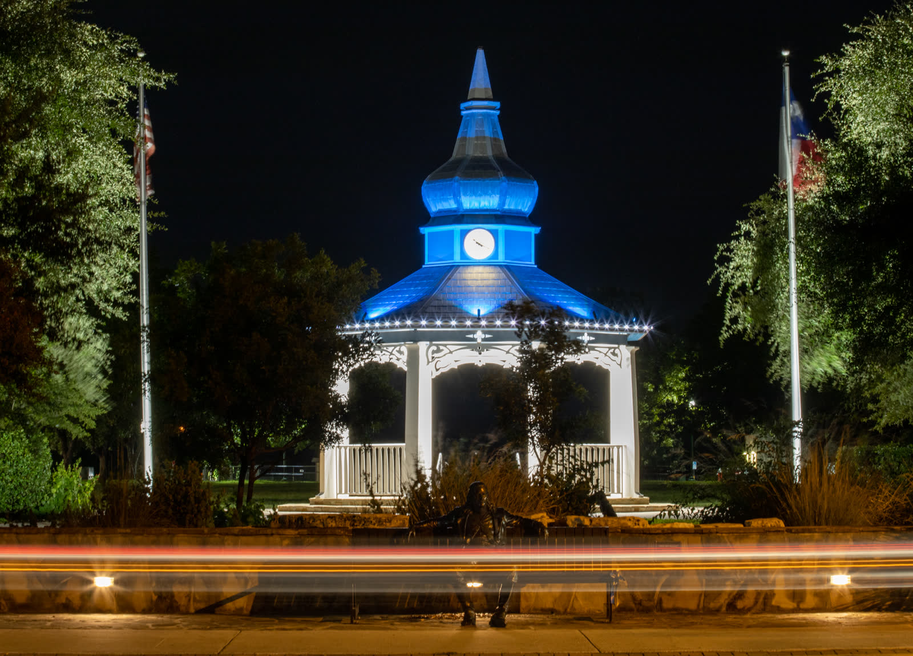

Boerne, Texas
Classical Education and Hill Country Living Where Reformed Faith Runs Deep

Key Stats
Overview
The Hill Country corridor from Boerne to Bandera offers one of the strongest combinations of classical Christian education and Reformed church life in Texas. Geneva School of Boerne is a premier ACCS-accredited institution serving KP through 12th grade with 684 students and SAT averages of 1240 -- among the highest of any classical school in this comparison.
The Reformed church landscape is deep for a Texas Hill Country town: 5 PCA congregations including Trinity Presbyterian Boerne, 2 OPC churches, 2 CREC congregations including Christ Church Boerne, and an RPCNA presence -- 13 Reformed churches total. The area's German heritage is visible along Boerne's Main Street, and the surrounding ranch country makes it one of the best equestrian locations evaluated.
Texas levies no state income tax, though the effective property tax rate of 1.28% is above the national average. The cost of living index sits at 114, driven primarily by housing -- median home prices in Boerne are $565K. Hot summers (highs reaching 94F) are the main lifestyle trade-off. The current buyer's market means more negotiating room for families relocating.
Scores
Weighted overall: 7.95
Cost of Living
Score: 6 -- No state income tax but 14% above national average overall
| Metric | Value | Notes |
|---|---|---|
| Overall Index | 114 | 14% above national average (100) |
| Housing Index | High | Driven by Boerne/Hill Country premiums |
| State Income Tax | 0% | Texas levies no income tax |
| Sales Tax | 8.25% | 6.25% state + up to 2% local |
| Property Tax (Effective) | 1.28% | $7,232 on a $565K home |
| Median Household Income | $84,541 | Boerne city proper; Kendall County metric is higher still |
| Remote Friendliness | High | Strong broadband infrastructure in Boerne corridor |
Top industries: Healthcare, Military (Joint Base San Antonio), Technology, Tourism, Ranching & Agriculture
Housing & Land
Score: 7 -- Median $565K with Hill Country acreage and equestrian properties
Neighborhoods
| Neighborhood | Price Range | Family Rating | Notes |
|---|---|---|---|
| Boerne (Town Center) | $400K-$800K | Excellent | German heritage Main Street, walkable downtown, near Geneva School |
| Cordillera Ranch | $600K-$2M+ | Excellent | Master-planned equestrian community, golf, resort amenities |
| Fair Oaks Ranch | $350K-$700K | Good | Family-friendly, between Boerne and San Antonio |
| Bandera / Pipe Creek | $250K-$600K | Good | Best value for acreage and horse property, "Cowboy Capital of the World" |
| Comfort / Sisterdale | $300K-$700K | Good | Quiet Hill Country living, larger lots, 15-20 min from Boerne |
Horse-friendly zoning throughout Hill Country. Excellent equestrian infrastructure with Cordillera Ranch, Diamond C Stables, and extensive Hill Country trail systems.
Education
Score: 9 -- Geneva School of Boerne is a premier ACCS classical school with SAT avg 1240
Classical Christian Schools
| School | Grades | Students | Details |
|---|---|---|---|
| Geneva School of Boerne | KP-12 | 684 | ACCS & Cognia accredited. SAT avg 1240. Premier classical Christian school in Texas Hill Country. Strong college placement. |
Homeschool Co-ops & Communities
| Organization | Type | Notes |
|---|---|---|
| Classical Conversations | Classical Christian | Multiple communities in the Boerne/San Antonio corridor |
Faith Community
Score: 8 -- 13 Reformed churches across PCA, OPC, CREC, and RPCNA
PCA Churches
| Church | Size | Notes |
|---|---|---|
| Trinity Presbyterian (Boerne) | -- | PCA church in Boerne, anchor of Reformed life in Hill Country |
| 4 additional PCA congregations | -- | 5 PCA churches total in the Boerne/San Antonio corridor |
Other Reformed & Presbyterian Churches
| Church | Denomination | Size | Notes |
|---|---|---|---|
| Christ Church Boerne | CREC | -- | CREC congregation, classical education emphasis, family-integrated worship |
| 1 additional CREC | CREC | -- | 2 CREC churches total in the area |
| 2 OPC congregations | OPC | -- | Orthodox Presbyterian presence in the metro |
| 1 RPCNA congregation | RPCNA | -- | Reformed Presbyterian, exclusive psalmody |
Breakdown: 5 PCA (inc. Trinity Boerne), 2 OPC, 2 CREC (inc. Christ Church Boerne), 1 RPCNA, plus additional Reformed congregations in the San Antonio metro.
Lifestyle & Outdoors
Score: 8 -- Hill Country trails, excellent equestrian, 228 sunny days
Climate
| Season | High | Low |
|---|---|---|
| Spring | 80F | 55F |
| Summer | 94F | 72F |
| Fall | 80F | 55F |
| Winter | 60F | 36F |
Outdoor Recreation
| Activity | Quality | Details |
|---|---|---|
| Equestrian | 5/5 | Cordillera Ranch, Diamond C Stables, Hill Country trail network, Bandera "Cowboy Capital" |
| Hiking | 4/5 | Hill Country State Natural Area, Guadalupe River State Park, Cibolo Nature Center |
| Water Sports | 4/5 | Guadalupe River tubing/kayaking, Canyon Lake, Medina Lake |
| Cycling | 3/5 | Hill Country scenic roads, growing mountain bike trails |
| Hunting / Fishing | 5/5 | Whitetail deer, turkey, Hill Country ranches, Guadalupe River trout |
Crime rates in Boerne are low -- 107 violent and 1,518 property crimes per 100K -- well below national averages and among the safer cities in this comparison. The Hill Country setting provides outstanding equestrian access, making it one of the top locations for horse families. Hot summers (94F highs) are the main lifestyle trade-off, though the elevation (~1,400 ft) and low humidity relative to coastal Texas provide some relief.
Cultural amenities: German heritage Main Street with shops and restaurants, Boerne Handmade Market, Cibolo Nature Center, Cascade Caverns, proximity to San Antonio (30 min).
Community
Score: 9 -- Strong small-town identity with deep church and school networks
| Attribute | Rating |
|---|---|
| Family Friendliness | Excellent |
| Homeschool Community | Strong |
| Conservative Presence | Very Strong |
| Small Town Feel | Very Strong |
| Equestrian Community | Excellent |
Boerne retains a genuine small-town character with its German heritage Main Street, local festivals, and tight-knit community networks. The Geneva School parent community and Reformed church families form overlapping social circles that make newcomer integration relatively smooth. The broader Hill Country corridor from Boerne through Bandera has a strong equestrian and ranching culture. Access to San Antonio (30 minutes) provides big-city amenities -- medical centers, airport, cultural attractions -- without the urban sprawl lifestyle.
Pros and Cons
Advantages
- No state income tax
- Geneva School of Boerne: premier ACCS classical school (KP-12, 684 students, SAT avg 1240)
- 13 Reformed churches across 4 denominations (PCA, OPC, CREC, RPCNA)
- Excellent equestrian infrastructure -- Cordillera Ranch, Diamond C Stables, Hill Country trails
- Low crime (107 violent, 1,518 property per 100K) -- well below national averages
- 228 sunny days per year
- Buyer's market -- negotiating room for relocating families
- German heritage Main Street with genuine small-town character
- 30 minutes to San Antonio for big-city amenities and airport
- Strong conservative and family-oriented community values
Considerations
- Hot summers with highs reaching 94F
- Median home price of $565K -- above national average
- Cost of living index 114 (14% above national)
- Property tax rate of 1.28% -- above national average (offsets no income tax)
- Small town (25K) -- limited local dining, shopping, and entertainment
- Car-dependent -- no public transit between Boerne and San Antonio
- 8.25% sales tax
- Hill Country properties can be on well water and septic systems